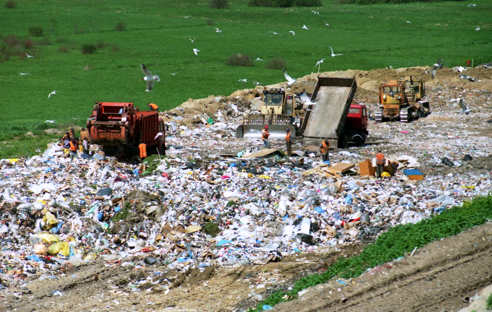

1 / 3

Water pollution is a really big and severe problem, especially involving the plastics. It can take from 100 to 1000 for the plastic to properly decompose, and even with this, it is still a huge problem. On top of the fact that the plastics stay in the water for no less than 100 years to decompose, marine animals can mistake these plastics for food. After ingestion of these plastics, they will by affected by them, either by poisoning or choking on them. This kills the marine life in the oceans and lakes. This is also a problem for humans, who will eat some of these animals who have ingested plastic. This can make problems for humans along with the aquatic environment. It is very important to make sure we reduce our plastic waste and recycle when possible. This way, we can save our aqautic environment and make life for all cleaner.
2 / 3

Leaving plastics in landfills or burying them in the ground is no better than throwing them in lakes or oceans. These can get be blown out of the open landfills into our environments and furthermore pollute it with the plastics, threatening our wildlife and ecosystems. On top of this, if buried into the ground, the plastic releases toxins into the soil that could affect organisms in it. It is very harmful to the animals and insects that livearound these landfills. These can be stopped by changing our habits, buying better and recycling all the plastics that we can.
3 / 3
A shown by the graph, the production of plastics had drastically increased from 2000 to 2015 and has kept rising. With more plastic being produced, we are destroying our planet, using up more resources, burning fossil fuels to make the things we need, and leaving all these plastics in the oceans and our environments allowing them to destroy the ecosystem around them. It is absolutely necessary for all of us to take initiative and reduce our usage of plastic and in turn reduce the amount of plastic manufactured.
❮
❯